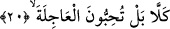
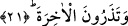

toplayamayacağımızı mı sanıyor” âyetinin ardından “şüphesiz onu toplamak ve
okutmak Bize âiddir” buyuruyor. Böylece “cem’” ile “cem” bir araya toplanmış oluyor.
Bu sırrı keşfettiğim için Allah’a hamdolsun.
Eski Râfızî fırkalarından bir grup -Allah onlara fırsat vermesin- bu konu karşısında
şaşırdılar ve âyette yer alan kelimeler arasındaki münâsebeti yakalayamadılar. Bundan
dolayı bu Kur’an değiştirilmiş, tebdil edilmiştir. Kur’an’da fazlalık vardır ve eksiklik
vardır gibi iddiâlarda bulunmuşlardır.
et-Tevilâtü’n-necmiyye’de üzerinde durduğumuz bu âyetlerle ilgili şu açıklama yer
alıyor: Bil ki “şey’iyyet” isminin verilmesinin mümkün olduğu her nesne mülktür ve
melekut’tur. Çünkü Allah; “Her şeyin melekûtu elinde olan Allah’ın şânı ne kadar
yücedir.” (Yâsin, 36/83) buyuruyor. Kur’an-ı Kerim eşyânın en şereflisi ve en
mükemmelidir. Kur’an’ın da bir mülkü ve bir melekûtu vardır. Onun mülkü; zâhirî
ahkâmı ve şerîatleridir. Bu ahkâm ümmetin çıkarlarıyla ilgili olan, mâli ve bedenî
ibâdetler ve cinâyetlerle ilgili hususlarla vasiyyet ve benzeri hükümlerdir. Kur’an’ın
melekûtuna gelince; bunlar içindeki ilâhî sırlarla lâhûtî gerçeklerdir. Bu sırlar ve bu
gerçekler ümmetin havasının ve ahassu’l-havassının bâtınları ile ilgilidir. Hattâ bunlar
ahassu’l-havas’ın hulâsâsı olan mükâşefât, gizli müşâhedât ve rûhânî muayenât ile
ilgilidir. Kur’an’ın içindeki mülkten ve melekuttan herbirinin bir müdrekatı vardır.
Onlar sâdece bunlarla kavranılır. Vicdana ve zevke âid gerçekleri ibârelerin dilleri
ifâde edemez. Çünkü bu gerçekler işâretlerin işâret edemeyeceği gerçeklerdir. Allah’ın;
“onu çarçabuk almak için dilini kımıldatma” ifâdesi ilerde gelecek olan bâtın ve
hakîkatlerin sırlarının zâhirî lisan ile ifâde edilemeyeceğine işâret etmektedir. Bir başka
ifâdeyle bu bâtınî sırlar ve gerçekler ibârelerin yardımıyla ifâde edilemeyecek
gerçeklerdir. Bunların görüntüsü Kur’an’ın mülkü ile melekûtunu bir araya toplar.
Peygamber (s.a.) Efendimiz Kur’an’ın mülkünün zâhirine ve melekûtunun bâtınına tâbi
olmaktadır. Bizler de Allah’tan kendimizi her an ve zaman dilimi içinde Kur’an’a
uyanlardan eylemesini dileriz.
20. Hayır! Doğrusu siz, çarçabuk geçeni (dünya hayatını ve nimetlerini) seviyor,
“Hayır!” Bu söz, sözün başlangıcındaki ifâdenin tamamlanmasına dönüştür. Ey
Âdemoğulları âhiret işi sizin zannettiğiniz gibi değildir.
“Dogrusu siz, çarçabuk geçeni” peşin olanı; yâni dünyayı “seviyorsunuz.”